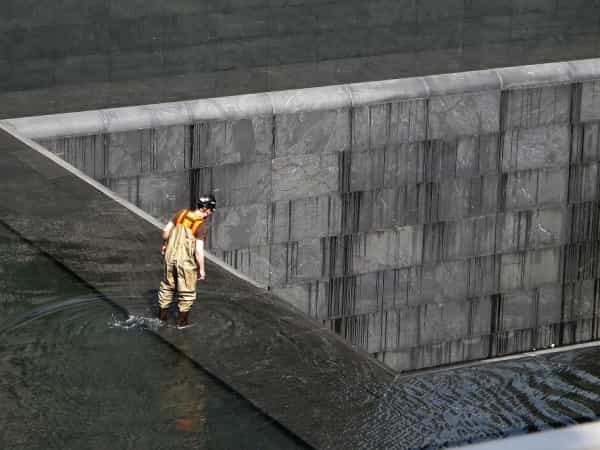

Daryush "Roosh" Valizadeh created ROK in October 2012. You can visit his blog at RooshV.com or follow him on Twitter and Facebook.


Every man who supports Donald Trump came to it from a different path. Some of you support him because of economic impoverishment or because you have seen your neighborhoods degrade from illegal immigrants. Or maybe you support him because you were attacked for being politically incorrect. For me and many other men, we came to support Trump because we shared truths about sex and the true nature of women.
In March 2012, after years of teaching men how to improve their sex lives through books and web sites, I was put on a list by the Jewish-operated Southern Poverty Law Center for being a misogynist. I was shaken up by this because I knew that my desire to enjoy sex with beautiful women and share the truths I’ve learned from it put me on a path of no return. Either I close down shop immediately or accept that the mob would one day come pounding on my door.
I decided to keep going. I responded to the SPLC designation with an article titled My Existence Is Becoming Illegal, where I described how heterosexual sex was now a defiant political act if the male received any benefit from it.
It is clear that gender hate is now a one-way street. Men can hate women but not the other way around. Men can rape, women can’t. Men can be abusive, both physically and emotionally, but women can’t. Men can be misogynist, but women can’t be misandrist, a word that is unknown to most of the American population. Men can be described as lazy slobs who play video games all day, but women are perfect as-is in a country where there are organizations trying to convince you that being fat is both healthy and beautiful. Male teachers get sent to pound-me-in-the-ass prison if they have sex with a student, but female teachers only get a slap on the wrist. If you’re a man, you’re likely a perpetrator of hate, violence, and abuse to innocent American women, even if you don’t yet realize your thought crime, but never the other way around.
Fast forward two years to October 2014. Witch hunts by leftists were in force. Rage mobs were crawling through social networking looking for racists, homophobes, and sexists with the aim of getting them fired. I studied the people who were participating in these witch hunts and wrote one of the most important articles I’ve ever published: What Is A Social Justice Warrior (SJW)?
The article was widely shared, influencing how people viewed the useful idiot layer of individuals who were guided and controlled by establishment forces consisting of academia, the corporate news media, Hollywood, Fortune 500 companies, Silicon Valley, and the billionaire owners of our politicians. Scratch a feminist SJW and you’ll find the reptilian skin of a billionaire who created the narrative she believes.
I was pessimistic when I wrote the SJW article, thinking we’d need a full generation (25+ years) to even begin defeating such a powerful anti-American entity. I focused on teaching men self-defense and avoidance instead of ways to defeat them. Little did I know that I was defining them at their absolute peak, and barely two years later a candidate who stood for the diametric opposite of social justice would win the presidency. The social justice warriors haven’t gone away, and they are rushing to fulfill the will of George Soros by refusing to accept the results of a fair election, but the power they have to force people to bend to their demands has been reduced, along with the power of the institutions that support them.
Though SJWism peaked in 2014, I had to face the full brunt of their attacks in the summer of 2015 during the Canadian stops of my lecture tour and again in February 2016 during the international meetups. I survived those attacks, and the fact that I’m still here right now and able to exercise my free speech on all my platforms—while you’re still here participating—shows clearly how little power they really had to stop us. They bruised me during the meetup outrage, but I healed quickly enough to weaponize my sites to spread my support of an even bigger enemy of theirs, Donald Trump.

I’m a pessimist by nature, so I didn’t have much hope that the establishment would allow Trump to win in the primaries, even though I was confident his ideas resonated with most Americans. But then I noticed that he simply couldn’t be knocked out, no matter what his enemies did. I saw him humiliate Jeb Bush, out-compete a resurgent Ted Cruz, and smack down any attempt by the media to force him to display weakness. By the time I attended the Republican National Convention in Cleveland, I started to believe.
The ground zero for Donald Trump within the manosphere was The Donald Trump thread on the forum, created in June 2015 by veteran member and ROK contributor Samseau. This is where the battle unfolded for thosuands of men. Over 2,000 pages long, the thread has been viewed nearly 6 million times. Ideas within it have filtered out into mainstream discourse, as described here, to men with bullhorns larger than I have.
After significant battles in a real war, medals are awarded but soldiers don’t nitpick on who was the “best” soldier. They all worked as a team to ensure victory, from the General (Donald Trump), the Colonels (his advisers), the Captains (major media influencers like Alex Jones, Matt Drudge, Paul Joseph Watson, and Mike Cernovich), the Sergeants (men like myself), the Specialists (men like Samseau), and on down to the Private, a regular commenter who contributes the occasional meme or argument in his spare time.
The ego cares about how impactful one is, how influential its ideas are, but the team player only cares about victory for the whole. Whether I am a Private or a Sergeant, I fought side by side with men in that thread and on this web site to what amounts to a modern fourth-generational informational war that will be studied by historians in the future. Who would have guessed that public internet sites operating on free open-source software would have such a positive effect on not just the result of the election, but on the lives of so many men who participated in it.
Two months before the election, I did a Youtube video urging men to vote for Trump, and it resulted in nearly 150 unsubscribes within a day, surprising even me since I thought my audience was mostly men who would automatically support a Trump presidency. The video echoed a lot of sentiments I shared in the article If Donald Trump Doesn’t Win, We’re Screwed, where I tried to convey the danger of a Hillary presidency.
Obama was the “race” president, and look how badly he has damaged race relations in only eight years. Hillary will be the “gender” president. The future we have in store should be absolutely clear to you if she happens to defeat Trump.
Not only will she move to establish a techno-matriarchy where men are second-class citizens to any female, but she will ensure that no movement or organization will be able to challenge her or her establishment cronies ever again. This isn’t a trivial matter of getting banned from a web site like Twitter or Youtube—many of you will be forced to escape the country for no other reason than you happening to be a man who found himself on the wrong side of the establishment.
For the next month, I stared at the calendar, waiting for the election to happen, doing what I could to push back against the narrative on Twitter. Then in early October, an old tape was released of Trump saying he grabs girls by the pussy because they “let” him. My sister called me, confused, and asked if he really was a bad man. I told her that the media is distorting his comments just like they distorted mine a few months earlier when their proclaimed me as a “pro-rape advocate.” I told her not to believe the media and to judge Trump by his actions and his policies, not a gotcha moment that was being spun out of control to help Hillary’s failing campaign.
I spoke to her with confidence, but inside I was concerned: in a politically correct world, would this be the blow to sink Trump’s candidacy? Is the majority of Americans actually ready to defeat political correctness? Thankfully, Trump responded strongly, ignoring calls by the traitors in the Republican party to step down.
The first poll to come in after pussygate suggested that Trump’s support didn’t decline. The fake controversy didn’t work. I held my breath for the next few days to see if another tape would come out, maybe of him saying the n-word, but none did, and I knew the establishment had no more bullets. This was the moment where I finally believed. I felt a rush of energy on that day as my subconscious accepted that Trump was going to win. I did a Periscope that night as if I was amped up on methamphetamine, but I took no drug.
From that point on it was just a matter of hanging on, until finally on November 8 when he was elected President. I was in disbelief after he won because it was only four years prior when I was attacked by the same forces that were aligned against Trump. I didn’t have to wait long until my personal enemies were dealt a monstrous defeat by another man whom I consider on the same team as us. If I made any miscalculation, it was that it would take a generation or longer for us to begin pushing back against establishment forces. I underestimated our own power, and those of our allies in the alternative internet space.

The most important lesson I learned from Trump’s victory is how pointless it is to control human beings, both their behaviors and their minds. Every single major institution in the United States, represented by billions of dollars of economic activity and influence, could not stop a populist candidate, in spite of trying everything short of assassination.
George Soros and his billions weren’t effective. Obama and his allies weren’t effective. The mainstream media and their dozens of outlets weren’t effective. CEOs of the biggest companies in the United States weren’t effective. Hollywood and it’s superstars weren’t effective. Academia and it’s thousands of professors weren’t effective. Social media and its censorship efforts weren’t effective. The FBI allowing Hillary to skate from real crimes wasn’t effective. Even Donald Trump’s own party wasn’t effective in stopping him. It’s absolutely incredible that all these forces couldn’t stop one man and his believers. What a disgrace to the fields of scientific management and modern propaganda for them all to fail so miserably!
Think right now of how much effort the anti-Trump forces put into stopping him from winning. Think of how much money they spent to guarantee their desired outcome. And now think how it was all for nothing. They accomplished the very opposite of what they moved mountains to accomplish, after decades of cementing their control within the country by sucking the truth and life blood from the American public.
Whatever term you use to describe the force that governs our existence—nature, God, Tao, or so on—it is clear that humans cannot control it all, and that the pendulum will swing when it wants to swing, that the wheel of history will turn when it wants to turn, and your billions of dollars and your propaganda and your institutions can do nothing to stop it. Imagine how impotent George Soros and his friends must feel after their limitless money and influence was all for nothing.
Now they have to perfect their control methods even more, open their pocket books further, and try to force their will upon a population as if pushing food into the mouth of someone who is already full. Their desire to control you is nothing but their own psychological failings of trying to alleviate their crippling fears, of trying to prove to themselves and to the world that they are a somebody, that they are powerful, that the world must be shaped into their image, that they are gods among men, but it should be clear to you by now that they are not gods but sociopaths who gamed an economic system to amass huge amounts of capital and money. Much of that will be flushed down the drain as they continue to fight and grasp their way to unequivocal defeat, or attempting to control those who do not want to be controlled.
You can control human beings, but only temporarily and only some of them. At the end of the day, humans want to do what they want to do, and if you don’t possess what they wish to buy, they will go to someone who does, no matter how much money you spend on your mechanisms of control. The more you control what does not want to be controlled, the more tension is created and then released in the great unraveling, of which we are currently living through. In previous eras, that tension resulted in victorious parades on the streets, but in our modern era, it is in the form of online celebrations with the use of tweets and memes.
If you want to be a true leader of society, create an environment where humans can associate with whom they want, can freely engage in commerce, can create families, can live in safety, can search for the truth without interference, and can work and play and live according to their nature. Put stone walls blocking their righteous will and watch them be torn down. It may take a decade, it may take 100 years, but it will happen, and the contraptions you used to control them will reveal not your strength but your own pathetic weakness.
We are tired of being controlled. Leave us alone. We are tired of institutions that are obsessed with controlling us, of forcing us to believe in falsehoods, of programming us to hate our country, of pitting woman against man and black against white. Leave us alone! Let men be men, and from that a new American renaissance will come forth. Men who are strong and good must be allowed to live their lives, and if you prevent us from doing so, we won’t allow you to live yours. We will humiliate your useful idiots, we will destroy your institutions, we will lash out with more than just memes.
I’m afraid that those who stand against us are gearing up for even greater authoritarian control over us, but at least now we have our man in the White House who can join us in a fight that we have already been battling for many years. I can’t wait to see where this fight takes us next.
Read Next: What Donald Trump’s Victory Means For Men